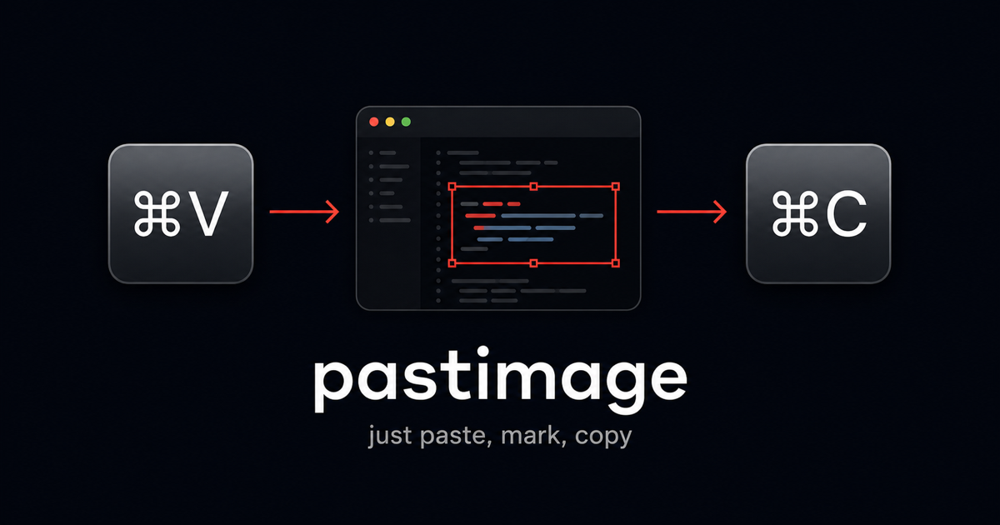
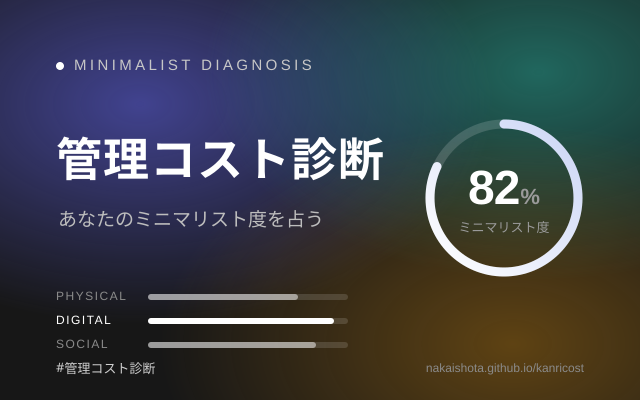
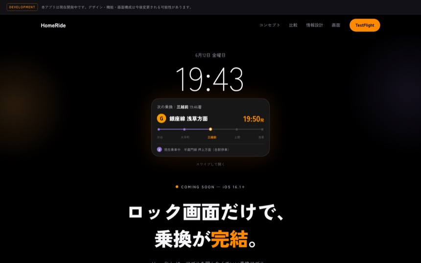
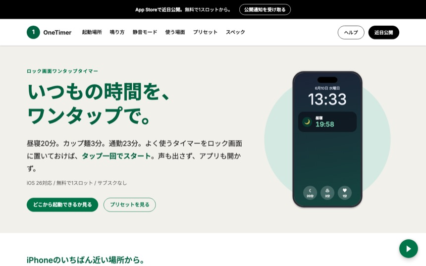
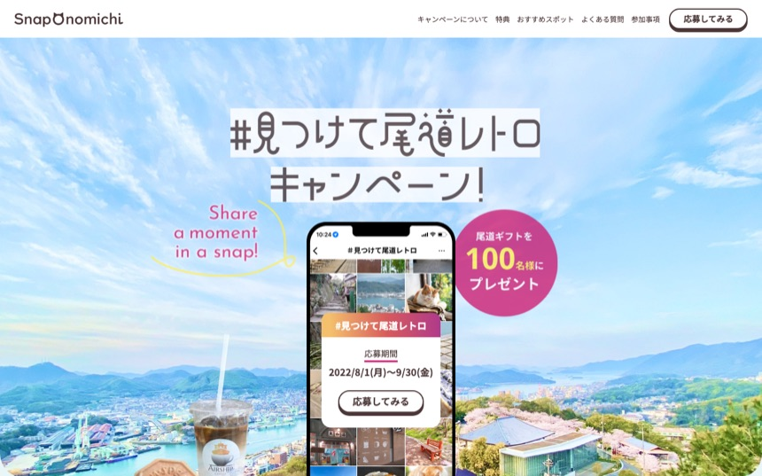

pastimage(自社プロダクト)
画像をペーストして赤枠やテキストで素早く注釈し、もう一度クリップボードに書き戻すだけの開発者向け Web ツール。ログイン不要・サーバへ画像を一切送らない完全クライアントサイド実装。Clipboard API と Canvas API を直接叩いて構築。ビルド工程なしの素の HTML/CSS/JS。
サイトを見る →
画像をペーストして赤枠やテキストで素早く注釈し、もう一度クリップボードに書き戻すだけの開発者向け Web ツール。ログイン不要・サーバへ画像を一切送らない完全クライアントサイド実装。Clipboard API と Canvas API を直接叩いて構築。ビルド工程なしの素の HTML/CSS/JS。
サイトを見る →「英数」キーを押している間だけ音声入力し、離すとカーソル位置に確定テキストを一括挿入する macOS 常駐アプリ。Apple の Speech で完全無料、認識結果を CGEvent のキー入力として送るのでターミナル含めほぼ全アプリで動作。語彙レビューはローカルの claude CLI で誤変換語を抽出して認識を補強。Swift / SwiftUI 製のオープンソース。

「モノ・通知・予定・契約を、どれだけ“持ちたくない”か」を日常のシナリオから診断し、ミニマリスト度を占う Web 診断。100問プールからランダム出題し、結果はタイプ分類とスクショ用カードで表示。React + TypeScript で構築。
サイトを見る →


このポートフォリオに、かけた時間。
このサイトも、AIを活用して最短で。
本質を見極め、速さと質を両立させること。それがわたしの流儀です。
新しい言語、新しい環境。何度でもゼロから始める力を磨いてきました。
医療機器の開発からキャリアを開始。C# と WPF で UI 実装の基礎を固め、ハードウェア制御やメモリ管理で低レイヤの視点を養った。経営層への報告を通じて、伝わる説明の大切さも学んだ。
膨大な波形データをメモリ効率よく扱う実装でパフォーマンス意識を磨く。設計書レビューを重ね、ドキュメントの品質にこだわるようになった。
職場全員が未経験の中、Web アプリケーションを単独で構築。0→1 で形にする力と、新しい技術を素早くキャッチアップする自信がついた。
C#・C++・C を組み合わせたシステム開発で複数言語の連携を得意に。通信プロトコルの設計から客先会議の進行まで、品質とスケジュールの両立を担った。
React と Ruby on Rails による SaaS 開発で、フロントとバックの両側から機能改善・新機能に携わる。データフロー全体を理解した提案で、チームの技術相談の中核を担う。シンプルに、論理的に。学び続ける姿勢を大切にしています。